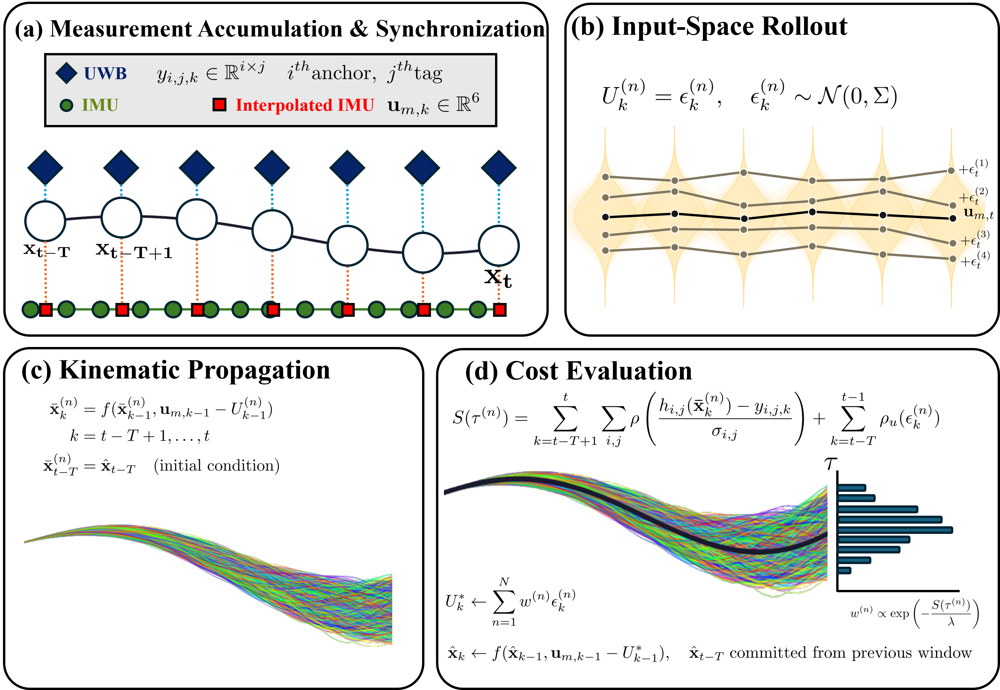
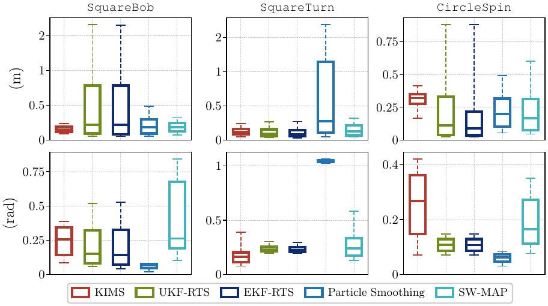
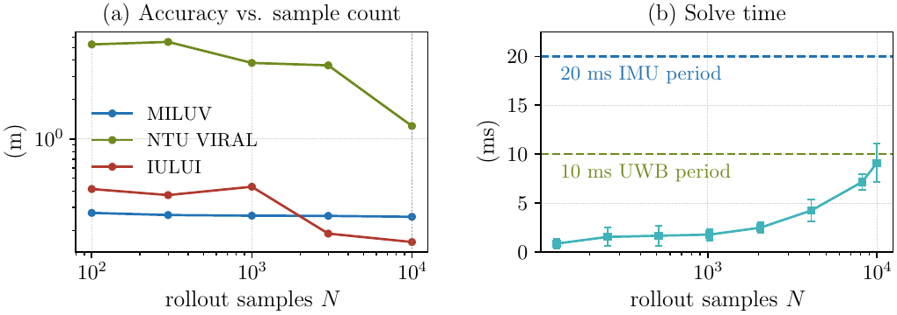
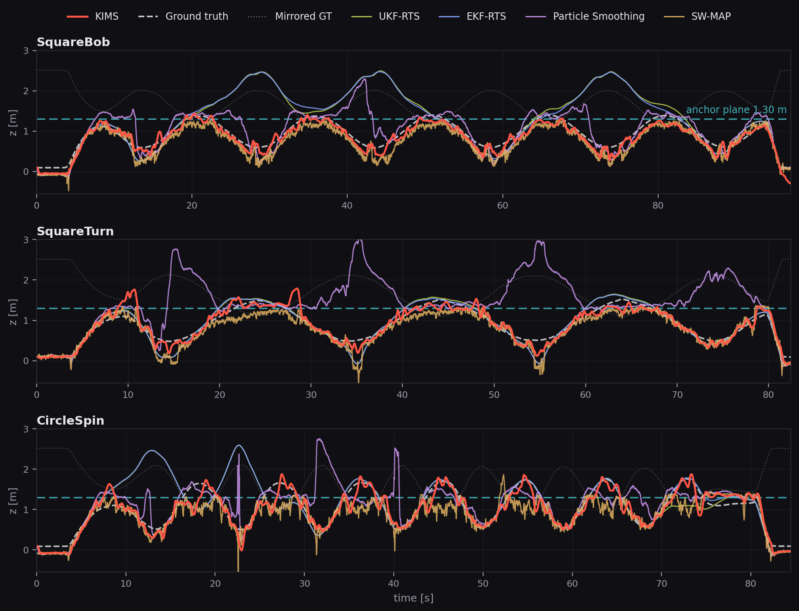
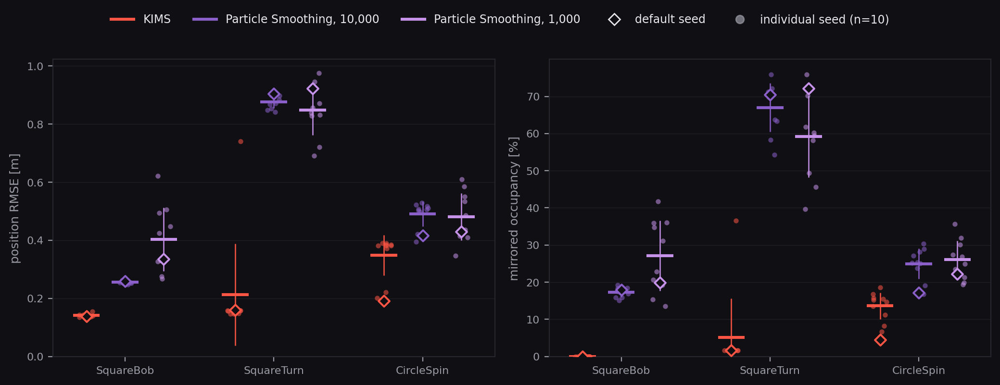

A fixed-lag smoother that samples IMU input compensations instead of poses — so every candidate trajectory is kinematically reachable, and the estimate stays out of the mirrored basin that UWB anchors at nearly the same height create.
The sampler on real footage — every rollout of the current window projected into the flight-arena camera, so the sampled input compensations are seen against the vehicle they explain. Each IULUI sequence, takeoff to touchdown, in real time. CircleSpin
NTU VIRAL eee_01 — outdoor, Leica ground truth
NTU VIRAL eee_02 — outdoor, Leica ground truth
MILUV remoteControlLowPace_0_v2 — indoor, mocap ground truth
MILUV random3_0 — indoor, mocap ground truth
IULUI CircleSpin — our dataset, mocap ground truth
IULUI SquareBob — our dataset, mocap ground truth
KIMS (red) tracking the ground truth (dashed) from UWB ranges + IMU only. The teal grid is the UWB anchor plane — the flights repeatedly cross it without mirroring.
When all UWB anchors sit at nearly the same height, the range geometry admits a mirrored solution on the other side of the anchor plane. The two basins are nearly indistinguishable from ranges alone; once a filter or a sliding-window optimizer drifts across, it never comes back.
KIMS recasts MPPI as a fixed-lag smoother whose virtual control is a per-window IMU input compensation. Every rollout is generated through IMU kinematic propagation — a hard constraint, not a cost term — so the 10,000 hypotheses explored each epoch all stay within the kinematically reachable neighbourhood of the current estimate. Basin confinement emerges from the sampling structure itself: no anchor-plane model, no known-side or height-bound prior.

One window of the smoother: UWB ranges and timestamp-aligned IMU are accumulated (a), N input compensations are sampled around the raw IMU (b), each is propagated through IMU kinematics from the window-start state (c), and UWB residuals turn into importance weights whose weighted mean commits the oldest state (d).
Tracks flights that repeatedly and legitimately cross an elevated anchor plane.
10,000 rollouts per UWB epoch; runs onboard a Jetson Orin NX within the sensor period.
All three datasets ship in the repo. Offline needs no ROS; the online ROS node is bit-identical on the same data.
Position RMSE [m] against every baseline, tuned once per dataset. Orientation and the mirrored-occupancy metrics are in the paper.
| Sequence | KIMS | UKF-RTS | EKF-RTS | Particle Sm. 10,000 particles | SW-PGO |
|---|---|---|---|---|---|
| IULUI · SquareBob | 0.139 | 0.778 | 0.776 | 0.260 | 0.216 |
| IULUI · SquareTurn | 0.159 | 0.170 | 0.168 | 0.905 | 0.215 |
| IULUI · CircleSpin | 0.191 | 0.561 | 0.551 | 0.416 | 0.320 |
| MILUV · random3 | 0.229 | 0.361 | 0.361 | 0.727 | 0.390 |
| MILUV · circular3D | 0.367 | 0.612 | 0.613 | 0.641 | 0.663 |
| MILUV · lowPace | 0.164 | 0.384 | 0.384 | 0.656 | 0.407 |
| NTU VIRAL · eee_01 | 0.743 | 9.167 | 8.637 | — | 8.943 |
| NTU VIRAL · eee_02 | 1.636 | 6.366 | 6.252 | — | 5.830 |
| NTU VIRAL · eee_03 | 1.371 | 6.832 | 6.695 | — | 6.493 |
— : diverged. The RTS smoothers see the entire future measurement history and still mirror; KIMS uses only a 15–18-epoch lag.

Error distributions on IULUI — position (top) and orientation (bottom). KIMS is not just lower on average, its spread stays tight where the baselines develop long tails from mirrored excursions.

Rollout-count sensitivity. (a) Position RMSE against the number of sampled rollouts N on all three datasets. (b) Solve time on a Jetson Orin NX, mean and standard deviation per solve; the dashed lines are the 10 ms UWB and 20 ms IMU periods.
The repository ships IULUI, our UWB-IMU flight campaign built specifically to
study anchor-plane degeneracy: four anchors at nearly the same height, and trajectories
that repeatedly cross the anchor plane — exactly the regime where fixed side-of-plane priors
reject valid states. Three sequences (SquareBob, SquareTurn,
CircleSpin), raw UWB ranges (2 tags × 4 anchors) + IMU, motion-capture
ground truth, as rosbag and CSV. MILUV and NTU VIRAL evaluation sequences are included too.
Deployment scale. The four anchors sit on a 5.9 × 5.9 m square at 1.30 m height with under 8 mm of height spread (exactly coplanar in practice). The flights span a 3.7 × 3.8 × 1.7 m volume, 82–97 s and 36–144 m of path per sequence, repeatedly crossing the anchor plane (30 ground-truth crossings over the three sequences).
Sensor rates. Nooploop LinkTrack ranges arrive as 100 Hz epochs (10 ms), the onboard IMU runs at ~50 Hz (20 ms), and Qualisys ground truth at 70 Hz. The UWB epoch rate being higher than the IMU rate is intentional in this campaign — IMU samples are interpolated to UWB timestamps by the estimator.

Altitude over each flight. Every sequence repeatedly crosses the anchor plane (teal), where the true and mirrored solutions meet. Each baseline jumps onto the mirrored branch (faint dotted) on at least one sequence, while KIMS (red) tracks the true branch aside from sub-second transients near crossings.
# offline — no ROS needed cmake -S . -B build -DKIMS_NO_ROS=ON && cmake --build build -j8 python3 scripts/run.py --method all --dataset all python3 scripts/plot.py # online — real-time ROS node, works on all three datasets roslaunch kims kims_online.launch dataset:=ntu sequence:=eee_01
Docker, per-dataset instructions and the online node's topics are in the README.
Per-solve wall-clock time of the KIMS GPU solver measured onboard a Jetson Orin NX over 5,893 UWB epochs of an IULUI flight (10 ms epoch period, T = 15). The paper quotes the mean at N = 10,000 and the full distribution is below. Real time here means sustained throughput at the sensor rate rather than a hard per-epoch deadline: a fixed-lag smoother queues the measurements of a slow epoch and absorbs them in the next window, so the fractions above 10 and 20 ms are given for reference, not as failures.
| Rollouts N | mean [ms] | median | p95 | p99 | max | > 10 ms | > 20 ms |
|---|---|---|---|---|---|---|---|
| 256 | 1.54 | 1.14 | 3.75 | 4.99 | 16.4 | 0.03% | 0% |
| 1,024 | 1.78 | 1.59 | 3.00 | 4.38 | 6.0 | 0% | 0% |
| 4,096 | 4.24 | 3.94 | 6.44 | 8.52 | 24.1 | 0.20% | 0.02% |
| 8,192 | 7.17 | 7.26 | 8.70 | 10.20 | 23.9 | 1.34% | 0.03% |
| 10,000 | 9.11 | 8.49 | 13.57 | 15.67 | 30.6 | 18.85% | 0.14% |
| 16,384 | 12.97 | 12.23 | 16.00 | 17.98 | 43.1 | 100% | 0.37% |
What "real time" means here. KIMS is a smoother, not a controller, so the requirement is that it sustains the sensor rate rather than meeting a hard per-epoch deadline: the mean solve time stays below the 10 ms UWB epoch, so the input queue does not grow, and an occasional slow epoch is absorbed by the next window instead of dropping a measurement. The > 10 ms and > 20 ms columns are given so that the tail can be judged, not because a solve past one epoch is a failure. Reducing N from 10,000 to 8,192 trades a small amount of accuracy for a much shorter tail, as the rows above show.
Two latencies, not one. The times above are computational latency, the cost of producing one solve. Separate from it is the estimation latency built into fixed-lag smoothing: the committed state is the oldest one in the window, so it trails the newest measurement by the horizon length. That delay is what buys the smoothing accuracy, and a consumer that needs the newest pose reads the propagated head of the window instead.
Timing files: result/<dataset>/<seq>/kims_timing.txt, one line
per solve.
Both stochastic estimators were re-run with ten different random seeds on the three IULUI sequences. KIMS uses N = 10,000 rollouts, and Particle Smoothing is shown at both the 10,000 particles reported in the paper, which match that rollout budget, and the reduced 1,000 of the original configuration. Diamonds are the runs reported in Tables I and III of the paper, dots are the individual seeds, bars the mean ± std. Occupancy uses the paper's definition (gated to 0.25 m from the anchor plane).

KIMS stays below Particle Smoothing on every sequence at every seed. Its spread comes from transients at plane crossings rather than consolidation in the mirrored basin. Particle Smoothing collapses at every seed at both particle counts, and raising the budget tenfold to match the KIMS rollouts moves occupancy only from 19.8, 72.1, and 22.3 % to 17.9, 70.4, and 17.2 %, so the collapse is structural under a reflection-symmetric likelihood rather than an artifact of the sample budget.
All baselines share the same measurements, extrinsics, robust loss, and cold start as
KIMS, and were tuned once per dataset. The exact implementations are in
src/offline/; the two that reviewers most often ask about are specified here.
SW-PGO is invoked as --method sw_map in the released scripts.
| Factor | Residual | Weighting |
|---|---|---|
| UWB range | ‖pA(i) − (pk + Rk pTjB)‖ − yi,j,k, one per tag-anchor pair per keyframe | Tukey loss (Ceres TukeyLoss), cutoff 3.0 on the raw range residual |
| IMU preintegration | 9-D on-manifold residual between consecutive keyframes: Δp, Δv (world frame, gravity-compensated) and Δq via the quaternion error | Unit weight on Δp and Δv, rotation weight 6.0 on the vector part of Δq |
| Arrival prior | Oldest keyframe of the window (previously committed pose, velocity, and quaternion) | Held constant (fixed parameter blocks) |
Window of 15 keyframes on MILUV and NTU VIRAL and 20 on IULUI, where the longer window gave SW-PGO its best accuracy on the validation sequence and is therefore the setting reported. Quaternions live on the Eigen quaternion manifold, the problem is minimized by Levenberg-Marquardt with a dense Schur solver, and after each solve the oldest state is committed and the window slides by one keyframe. Covariances: UWB residuals are unweighted inside the Tukey loss (cutoff 3.0 on the raw range residual in metres), and the IMU factor uses unit weights on Δp and Δv with a rotation weight of 6.0.
Bootstrap particle filter with adaptive (ESS-triggered) systematic resampling and fixed-lag
smoothing over the particle genealogy, with 10,000 particles matching the KIMS
rollout budget. On the Jetson Orin NX this costs 1.46 ms per epoch, well inside the 10 ms UWB
period, so the sample-matched setting is also the real-time-feasible one. The original
1,000-particle configuration is evaluated alongside it in the seed figure below; run it with
num_particles:=1000.
# reproduce every baseline number in the paper python3 scripts/run.py --method all --dataset all # any single method or sequence python3 scripts/run.py --method particle_smoothing --dataset iului python3 scripts/run.py --method kims --dataset iului --sequence CircleSpin
Under review, IEEE Robotics and Automation Letters (RA-L), 2026.
@article{kims2026,
title = {KIMS: Kinematic-Constrained MPPI Smoothing for
UWB-IMU 6-DoF Pose Estimation},
journal = {IEEE Robotics and Automation Letters (under review)},
year = {2026}
}